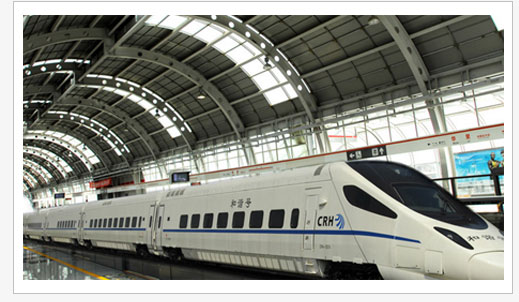

如果您乘地铁来If you have the subway
如果您乘出租车或自驾If you take a taxi or drive
如果您乘公交来If you by bus
如果您乘动车来If you came here by train

上海火车站 →地铁4号线→塘桥站出站（3号口出），出站即可看见由由大酒店，左手边上天桥，左手边下来，直走5-8分钟即到。
虹桥火车站 →地铁2号线（广兰路方向），在世纪大道站→地铁4号线（宜山路方向），在塘桥站下车（3号口出）步行5-8分钟即到。或乘坐地铁10号线（新江湾城方向），在虹桥路站下→地铁4号线（宜山路方向），在塘桥站下车（3号口出）步行5-8分钟即到。
如果您坐飞机来If you came here by air
虹桥国际机场 →步行至虹桥1号航站楼站→地铁10号线(新江湾城方向), 在虹桥路站下车→地铁4号线(宜山路方向) 在塘桥站下车(3号口出) →步行5-8分钟即到。或乘坐地铁2号线（广兰路方向），在世纪大道站→地铁4号线（宜山路方向），在塘桥站下车（3号口出）步行5-8分钟即到。
浦东国际机场 →磁悬浮， 在龙阳路站下车→乘坐地铁2号线（徐泾东方向），在世纪大道站下→乘坐地铁4号线（宜山路方向），在塘桥站下（3号口出）→步行5-8分钟即到。
我们社会责任Nanpu public welfare
南浦"宅医送"上门服务金阿婆
南浦"宅医送"关注特殊女性
东方卫视报道南浦"宅医送"公益活动
上海电视台报道南浦"进工地,送健康"活动
腾讯•大申网邀请南浦王桂兰主任讲解妇科炎症
上海电视台报道南浦援助外来媳活动
患者点评Patients with comments